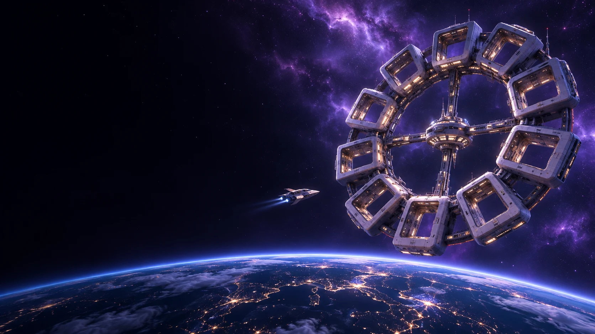
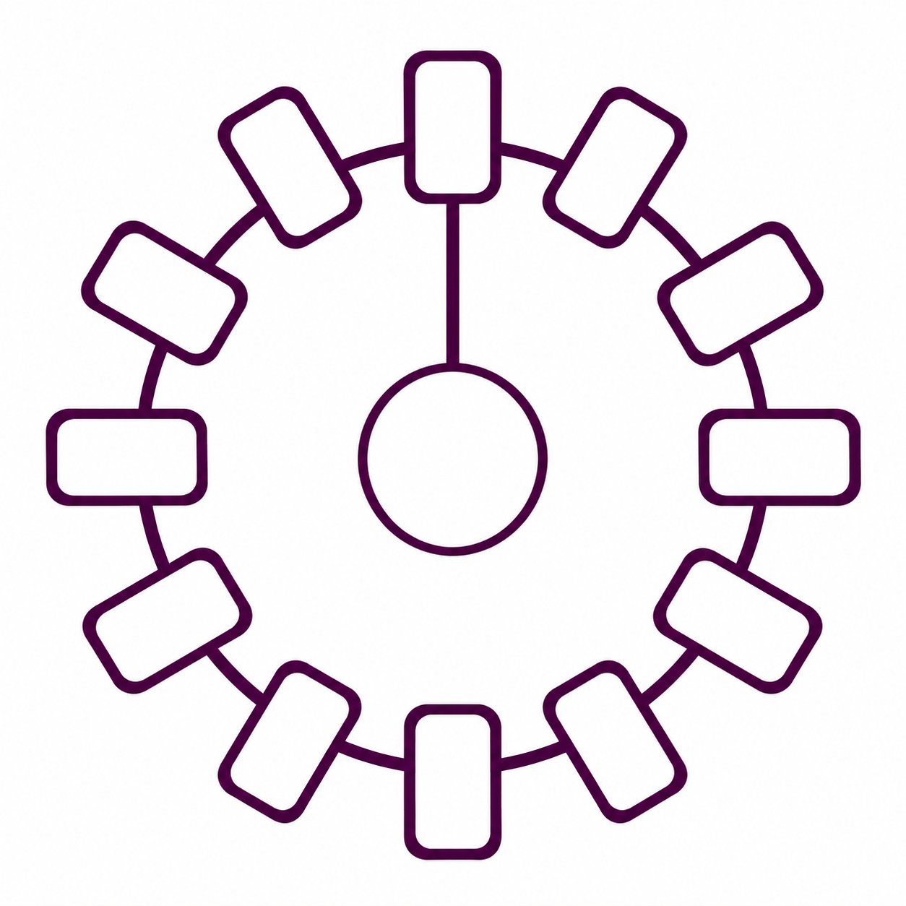
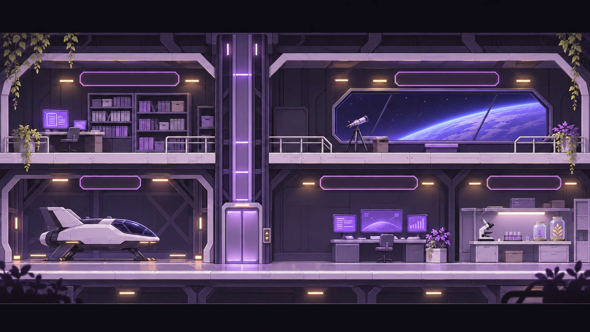
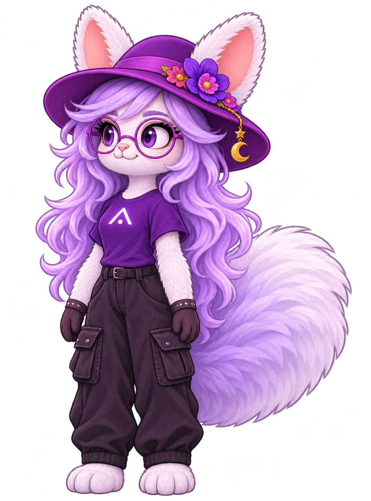
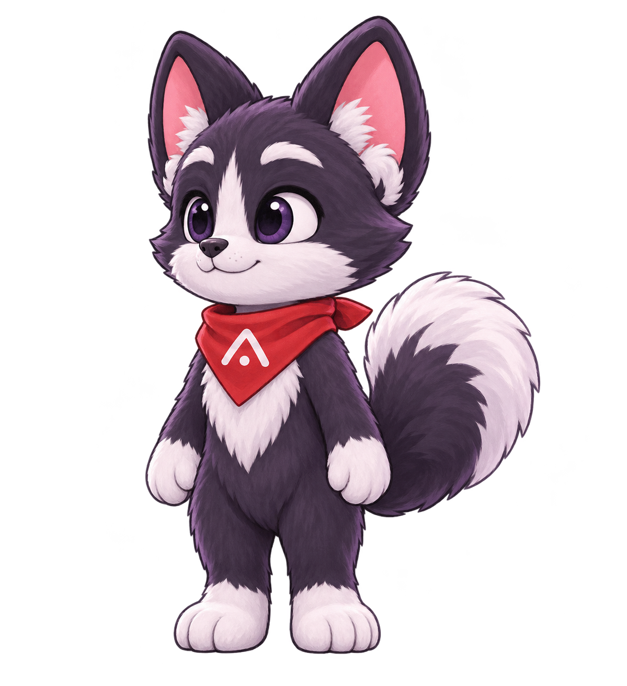
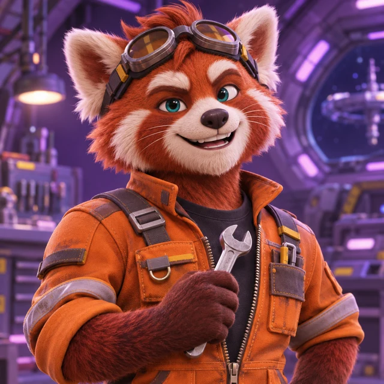
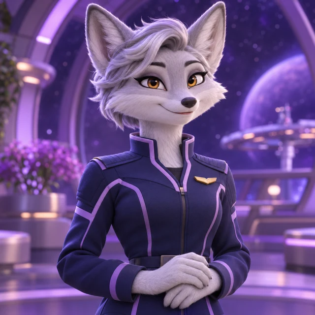
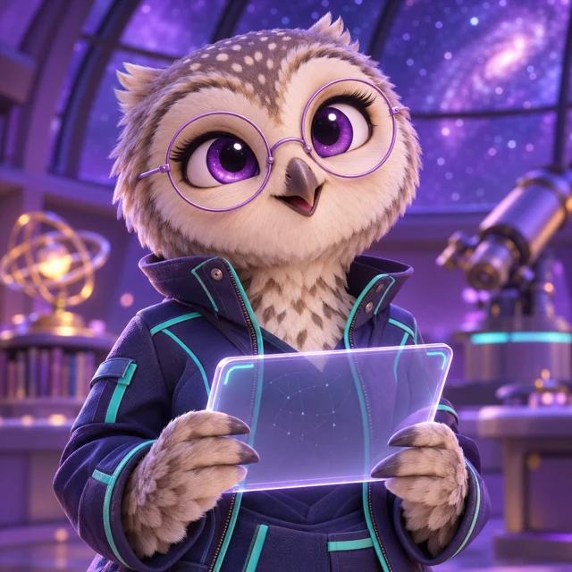
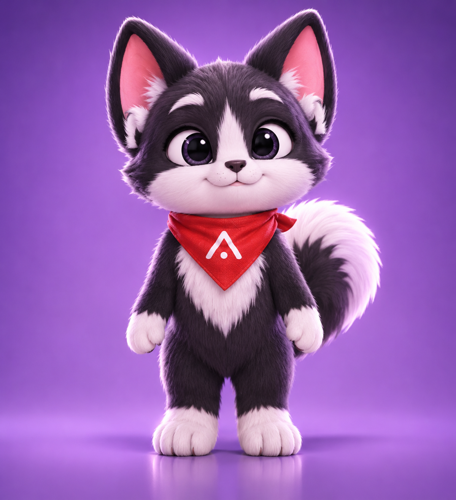

AVI HORIZONS está diseñado para teclado y una pantalla horizontal. Amplía la ventana si ya estás en una computadora.








CONNECTION SPACE
Tu preparación y las áreas visitadas se conservan en este navegador cuando es posible.
PLANIFICACIÓN
HORIZONS 1 / PAUSA
La simulación se detiene mientras consultas un panel. Tu progreso se guarda en este navegador.
UNA EXPEDICIÓN EN CURSO
Ya tienes una partida guardada. Puedes continuarla o reemplazarla con una nueva planificación.
HORIZONS 1 ↔ TIERRA
ARCHIVO DE NAVEGACIÓN
OBSERVATORIO / EXPERIMENTOS
Compara dos eventos de un viaje ideal a velocidad constante. La referencia acumula 10 años; el reloj a bordo acumula un tiempo propio menor.
Δτ = Δt √(1 − v²/c²)
Modelo ideal de relatividad especial, sin gravedad ni maniobras de regreso. No representa las velocidades de ECOS DE MARTE.
Un reloj estático cerca de una masa esférica no rotante acumula menos tiempo que la referencia muy lejana. Explora un modelo ideal fuera del radio de Schwarzschild.
Δτ = Δt √(1 − rₛ/r)
Modelo de Schwarzschild con r > rₛ. Mantenerse estático exige aceleración. No modela el agujero negro rotante ni las órbitas de Interestelar.
En el marco del planeta, la rapidez relativa de entrada y salida se conserva en el encuentro ideal. En el marco solar, puede cambiar al intercambiar energía orbital con el planeta.
Parámetros de demostración: planeta a 13 km/s y rapidez relativa de 10 km/s. No es una trayectoria de misión ni una fuente de energía ilimitada.
TRIPULACIÓN / SELECCIÓN INICIAL
Dos perspectivas. Un mismo horizonte. Elige a quién quieres llevar en tu próxima expedición.

AVI y MAQUI ofrecen herramientas distintas para explorar la misma estación.
CONNECTION SPACE / CONOCIMIENTO
Comprender el tiempo también forma parte de la misión.
La latencia es el tiempo que tarda una señal en llegar. En un modelo de distancia fija y propagación en el vacío, se calcula como distancia dividida entre la velocidad de la luz.
Pedir instrucciones implica un trayecto de ida, el tiempo de respuesta y un trayecto de vuelta. Por eso una misión lejana necesita capacidad para decidir a bordo.
Acelerar una animación solo cambia cómo presentamos la simulación. No produce dilatación temporal.
Un instrumento puede aumentar las oportunidades científicas y, al mismo tiempo, aumentar la masa, la potencia requerida y la cantidad de datos que hay que transmitir.
La misión se evalúa como un sistema: ciencia, recursos, comunicaciones y tiempo.
CONFIGURACIÓN
Oculta la barra del navegador. Pulsa Esc para volver.
EL ORIGEN DE LA MISIÓN
AVI CONNECTION
CONECTANDO IDEAS, CREANDO REALIDADES
AVI HORIZONSAventura espacial 2D de exploración, ciencia y narrativa.
Gustavo Vargas LaraLogo de doce módulos huecos y trazos finos aprobado para AVI HORIZONS.
Entrada, menú, selección y CONNECTION SPACE explorable. Incluye estación explorable, planificación, lanzamiento, viaje, decisiones, descenso, exploración de Marte e informe final. Guardado local y repetición de la misión. Conversaciones con la tripulación, expedición detallada de Marte y campaña de 25 niveles jugables con atlas ilustrado.
Diseño y desarrollo asistidos con ChatGPT. Logo trabajado mediante generación de imágenes con IA. Fondo orbital y retratos de Lyra, Teo y Nova generados con IA. Diagramas dibujados con SVG y Canvas. Fondos interior y marciano, y adaptaciones 2D de AVI y MAQUI generados con IA a partir de las referencias visuales proporcionadas por la dirección del proyecto. Ambiente sintetizado y banda sonora original Horizonte estelar.
Cada ficha del atlas identifica observaciones, composiciones o ilustraciones y enlaza la fuente y sus créditos. Los escenarios del juego son recreaciones artísticas.
NASA — comunicaciones marcianas ↗Einstein Online — dilatación temporal ↗NASA — fundamentos de vuelo espacial ↗
Prototipo independiente de AVI CONNECTION. Esta versión no afirma afiliación ni aprobación de NASA.
TRIPULACIÓN / CANAL LOCAL
ARCHIVO DE EXPLORACIÓN / 05 MISIONES
Consulta las imágenes, el contexto científico y las fuentes de los 25 destinos de la campaña.
HORIZONS 1
La nave y el tiempo de vuelo quedan detenidos.
Consulta tus vuelos, decisiones y resultados en este navegador.
CONNECTION SPACE / CANAL DE ALEX
ALEX · ASISTENTE CIENTÍFICO
ECOS DE MARTE / DEMOSTRACIÓN